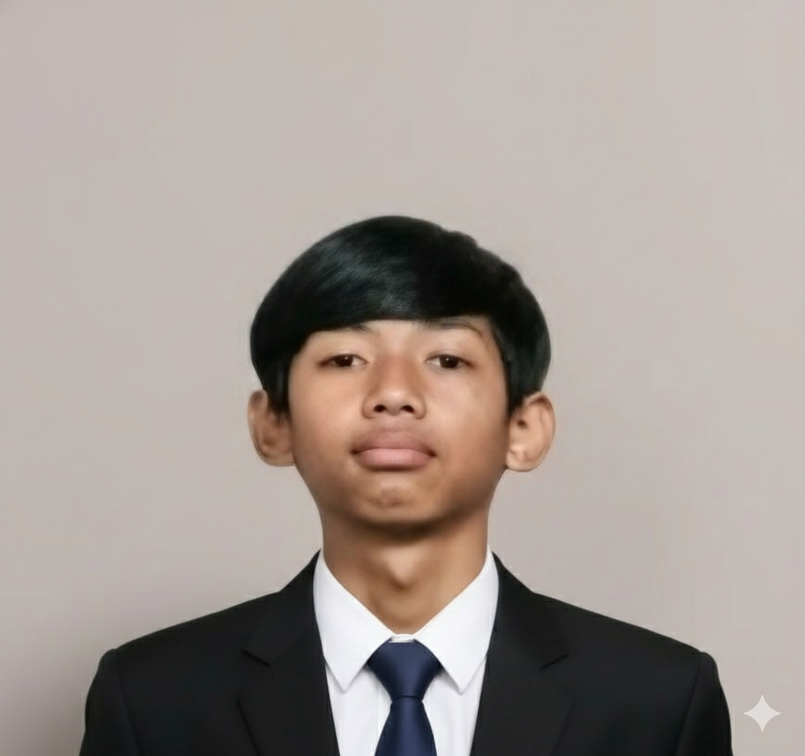
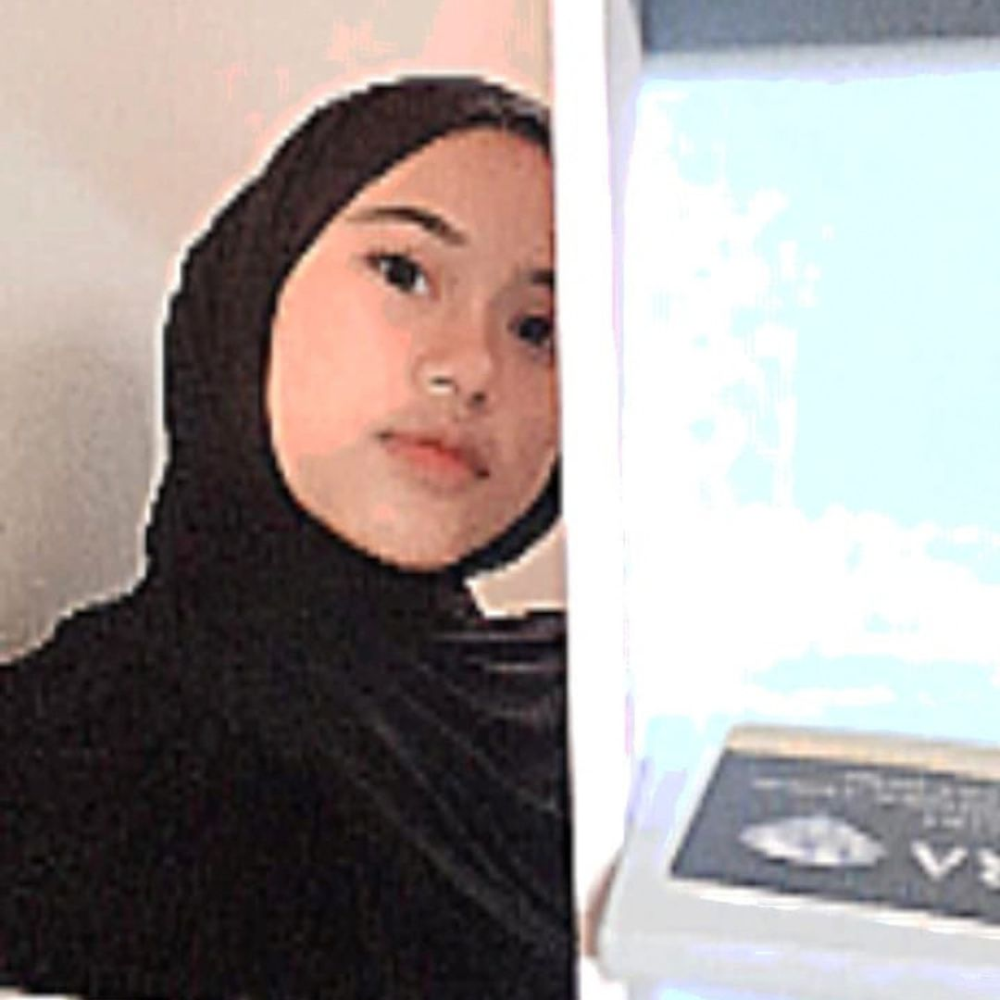
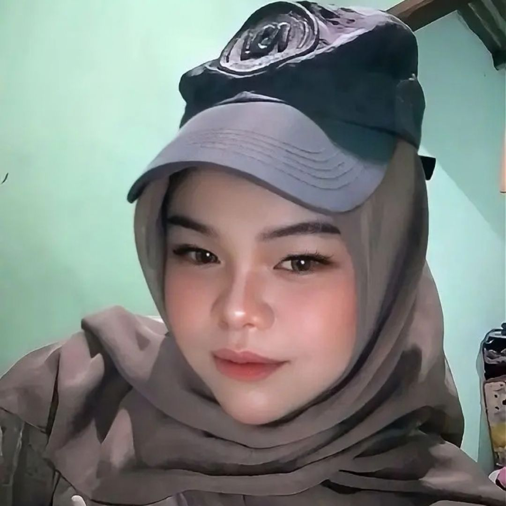
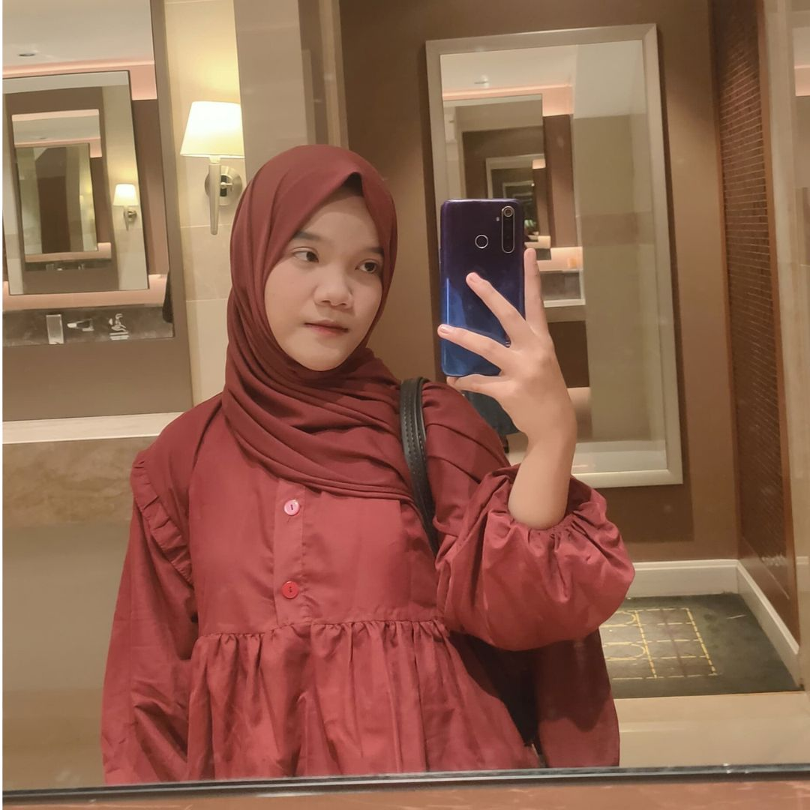
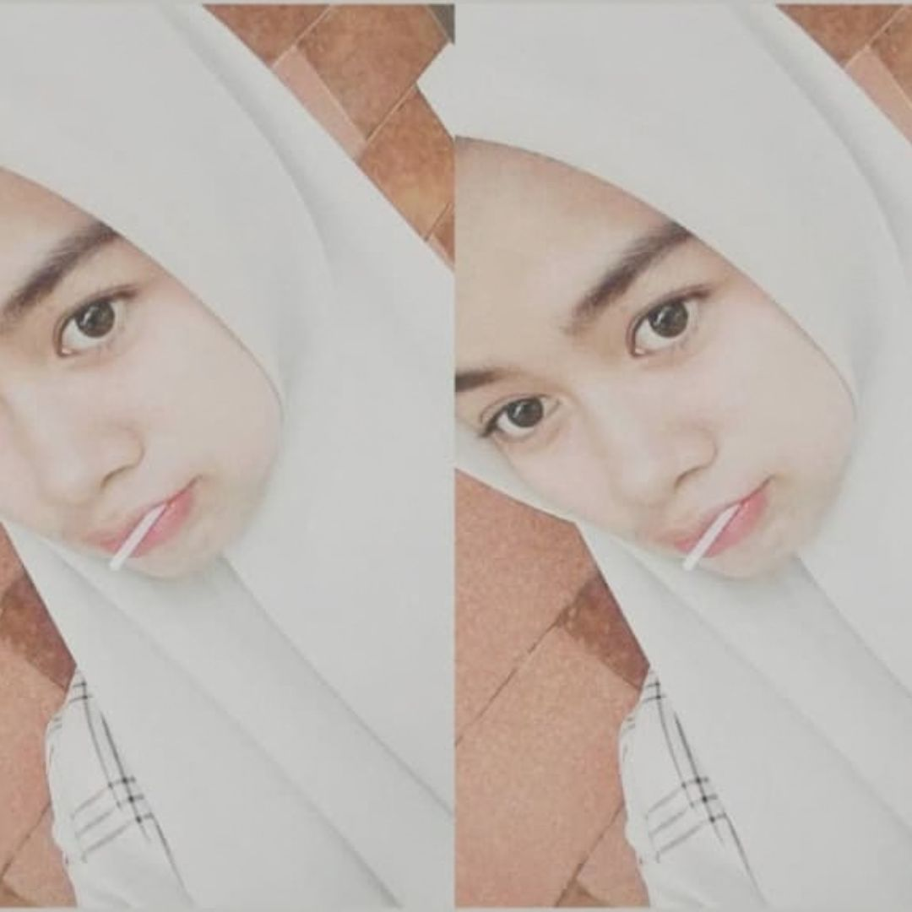

Indeks Kesejahteraan Penduduk Indonesia
Sebuah catatan tentang bagaimana kita mengukur kualitas hidup masyarakat. Tersedia dalam tiga mode: Rangkuman untuk baca cepat, Materi untuk pemahaman lengkap, dan Slide untuk presentasi.
Mau yang mana dulu?
Setiap orang punya gaya belajar yang beda. Pilih mode yang paling cocok buat kamu.
Rangkuman · 5 menit baca
Versi padat semua materi dalam satu halaman. Cocok buat quick review atau belajar sebelum ujian.
Materi Lengkap
Penjelasan detail dengan tab interaktif, chart, simulasi, dan kuis. Buat yang mau paham mendalam.
Slide Presentasi
Mode full-screen dengan navigasi keyboard. Cocok buat presentasi di depan kelas.
Kuis & Simulasi
Uji pemahaman dengan 5 soal pilihan ganda, dan coba simulasi alokasi anggaran pembangunan.
Tentang proyek ini.
Disusun sebagai bagian dari tugas kelompok Geografi untuk memahami konsep Indeks Kesejahteraan Penduduk Indonesia.

Allif Prayudha

Didin Samsudin

Deby Indriyani

Feby Sapriatna P.

Lestari Fatihatul Q.

Mozah Pertiwi

Rehan

Sintia Muharam

Idzan Fajar Isnain
Semua yang perlu kamu tahu, di satu halaman.
Versi padat dari materi Indeks Kesejahteraan Penduduk Indonesia. Cocok buat review cepat sebelum ujian atau sebagai contekan belajar.
Apa itu kesejahteraan?
- Kesejahteraan = kondisi terpenuhinya kebutuhan dasar manusia secara layak.
- Ada 4 aspek: akses layanan dasar, partisipasi aktif, jaring pengaman sosial, dan sifat multidimensi.
- Ekonomi Indonesia Q1 2023 tumbuh 5,03%. tapi pertumbuhan ekonomi saja tidak cukup untuk mengukur kesejahteraan.
Bagaimana kita mengukurnya?
- Kependudukan: jumlah penduduk, kelahiran, kematian, migrasi.
- Kesehatan & Gizi: akses pelayanan, harapan hidup, air bersih, sanitasi.
- Pendidikan: melek huruf, partisipasi sekolah, kualitas pendidikan.
- Ketenagakerjaan: pengangguran, upah, kesempatan kerja layak.
- Konsumsi: pendapatan per kapita, daya beli, akses barang/jasa.
- Perumahan & Lingkungan: rumah layak, sanitasi, lingkungan sehat.
- Kemiskinan: jumlah penduduk di bawah garis kemiskinan.
Apa yang memengaruhinya?
Bagaimana kondisi terkini?
- Pandemi 2020 menyebabkan stagnasi. IPM tetap di 71,9.
- 2021 mulai pulih. IPM naik 0,4 poin, harapan hidup naik 0,2 tahun.
- Sumber: Badan Pusat Statistik (BPS), 2022.
Pesan utama
- Kalau alokasi pembangunan terlalu berat di satu sektor, kesenjangan justru melebar.
- Kesejahteraan membutuhkan kerja kolaboratif: pemerintah, masyarakat, sektor swasta.
- Tujuan akhirnya bukan angka, tapi kualitas hidup manusia.
Apa yang kita maksud dengan sejahtera?
Kesejahteraan adalah kondisi terpenuhinya kebutuhan dasar manusia. Bukan hanya secara materi, tetapi juga sosial, kesehatan, dan lingkungan.
Secara umum, kesejahteraan dapat dipahami sebagai kondisi ketika seseorang atau masyarakat dapat memenuhi kebutuhan hidupnya secara layak. Ini mencakup banyak aspek, mulai dari akses terhadap pendidikan dan kesehatan, hingga rasa aman dan keadilan sosial.
Akses Layanan Dasar
Mencakup akses terhadap pendidikan, kesehatan, keamanan, dan keadilan bagi seluruh masyarakat.
Partisipasi Aktif
Penguatan jaringan sosial, partisipasi aktif masyarakat dalam proses pembangunan, dan penurunan kesenjangan.
Jaring Pengaman Sosial
Adanya keputusan sosial menjadi faktor penting dalam meningkatkan kesejahteraan dan pertumbuhan ekonomi.
Multidimensi
Kesejahteraan mencakup aspek sosial, ekonomi, kesehatan, dan lingkungan secara bersamaan.
Ekonomi Indonesia pada triwulan pertama 2023 tumbuh sebesar 5,03% dibandingkan periode yang sama tahun lalu.
Bagaimana kita mengukurnya?
Ada tujuh indikator utama yang biasa digunakan untuk mengukur tingkat kesejahteraan suatu masyarakat.
Kependudukan
Memahami dinamika populasi sebagai fondasi perencanaan pembangunan.
- Informasi mengenai jumlah penduduk, tingkat kelahiran, kematian, dan migrasi.
- Penting untuk memahami dinamika populasi dan kebutuhan pembangunan.
- Indikator pembantu: kepadatan penduduk, rasio jenis kelamin, angka beban ketergantungan.
Kesehatan & Gizi
Kesehatan adalah hak dasar setiap warga negara.
- Melibatkan akses pelayanan kesehatan, tingkat harapan hidup, tingkat kematian, dan prevalensi penyakit.
- Status gizi penduduk, penyakit menular dan tidak menular.
- Ketersediaan air bersih dan sanitasi layak, serta program gizi dan imunisasi.
Pendidikan
Kunci untuk memutus rantai kemiskinan.
- Tingkat melek huruf, angka partisipasi sekolah, dan kualitas pendidikan.
- Peningkatan akses dan kualitas pendidikan menjadi prioritas.
- Bertujuan mengurangi kesenjangan dan meningkatkan kualitas tenaga kerja.
Ketenagakerjaan
Pekerjaan layak adalah kunci kesejahteraan ekonomi.
- Meliputi tingkat pengangguran, tingkat partisipasi angkatan kerja, dan tingkat upah.
- Menurunkan pengangguran dan meningkatkan kesempatan kerja layak dan produktif.
Taraf & Pola Konsumsi
Daya beli adalah cerminan kesejahteraan.
- Mencakup pendapatan per kapita, pola konsumsi, dan akses terhadap barang dan jasa.
- Pertumbuhan ekonomi yang inklusif dan peningkatan daya beli masyarakat berperan penting.
Perumahan & Lingkungan
Tempat tinggal layak adalah hak dasar.
- Akses terhadap perumahan layak, sanitasi, air bersih, dan lingkungan sehat.
- Penyediaan perumahan terjangkau dan berkualitas serta perlindungan lingkungan.
Kemiskinan
Indikator paling fundamental dalam kesejahteraan.
- Mengukur jumlah penduduk yang hidup di bawah garis kemiskinan.
- Melibatkan program perlindungan sosial, pemberdayaan ekonomi, dan akses layanan dasar.
Apa yang memengaruhinya?
Ada lima modal dasar yang menentukan tingkat kesejahteraan.
Sumber Daya Manusia
Sumber Daya Alam
Modal Finansial
Infrastruktur
Modal Sosial
Bagaimana kondisi terkini?
Badan Pusat Statistik (BPS) merilis laporan indikator kesejahteraan rakyat dan statistik kriminal untuk menggambarkan kondisi Indonesia selama dan setelah pandemi Covid-19.
Indeks Pembangunan Manusia
Angka Harapan Hidup
| Tahun | IPM | Perubahan | Harapan Hidup |
|---|---|---|---|
| 2017 | 70,8 | - | 72,9 thn |
| 2018 | 71,4 | ▲ 0,6 | 73,0 thn |
| 2019 | 71,9 | ▲ 0,5 | 73,2 thn |
| 2020 | 71,9 | - 0,0 | 73,4 thn |
| 2021 | 72,3 | ▲ 0,4 | 73,6 thn |
Produk Domestik Bruto (PDB) bergerak ke arah positif menjadi 3,7% (2021), setelah tahun sebelumnya di minus 2,1%. Ini menandakan pemulihan ekonomi pasca pandemi.
Coba jadi Menteri Perencanaan.
Kamu punya 100 poin anggaran pembangunan. Ini contoh alokasi yang buruk. tugasmu memperbaikinya sampai skornya naik.
Alokasi Anggaran Pembangunan
Total anggaran tersedia: 100 poin. Sistem akan menghitung indeks secara langsung. Bisakah kamu capai skor 100?
Uji pemahamanmu.
Coba jawab 5 pertanyaan berikut. Skor akan dihitung otomatis.
Siap presentasi di depan kelas?
Masuk ke mode full-screen. Kamu bisa navigasi pakai tombol panah kiri/kanan di keyboard, atau klik tombol di layar. Tekan ESC untuk keluar.